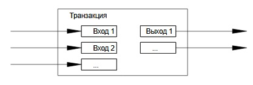

9. Соединение и разделение сумм
Несмотря на то, что можно оперировать отдельными монетами, создавать
специальную транзакцию для каждого цента было бы слишком неудобно. Для
поддержки разделямых и объединяемых сумм транзакции содержат несколько
входов и выходов. Обычная транзакция будет выглядеть так: либо один вход от
предыдущего крупного платежа, либо несколько входов, аккумулирующих небольшие
суммы, и не более двух выходов: один является собственно платежом, а другой, если
необходимо, возвращает «сдачу» обратно отправителю.

Необходимо отметить, что
увеличение связей, когда транзакция зависит от нескольких, а те в свою очередь
зависят от еще большего числа, не является проблемой, поскольку
нет необходимости получать полную и независимую копию истории транзакции.